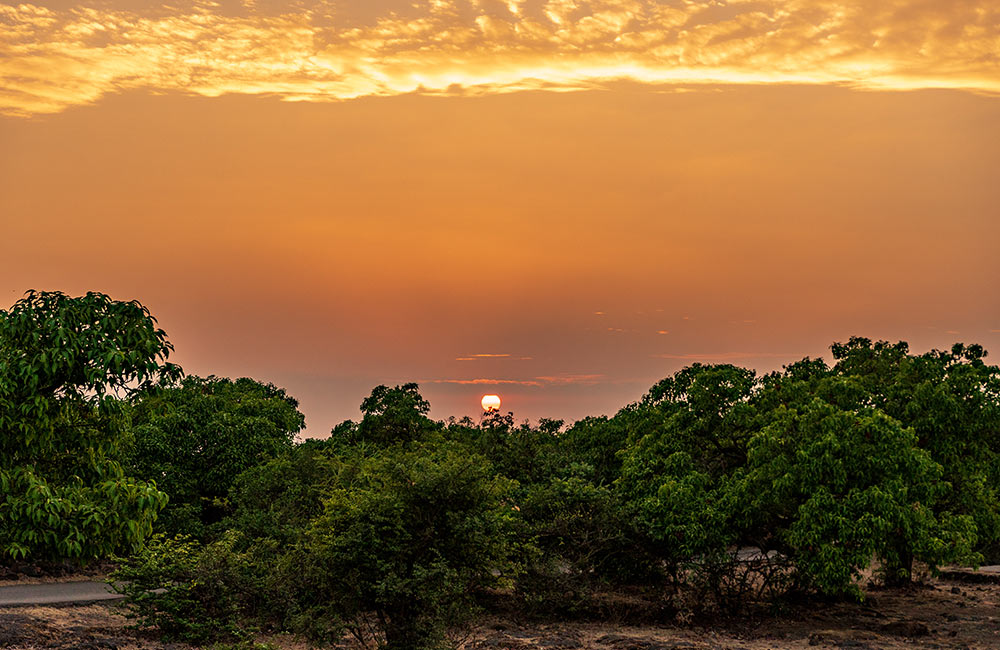
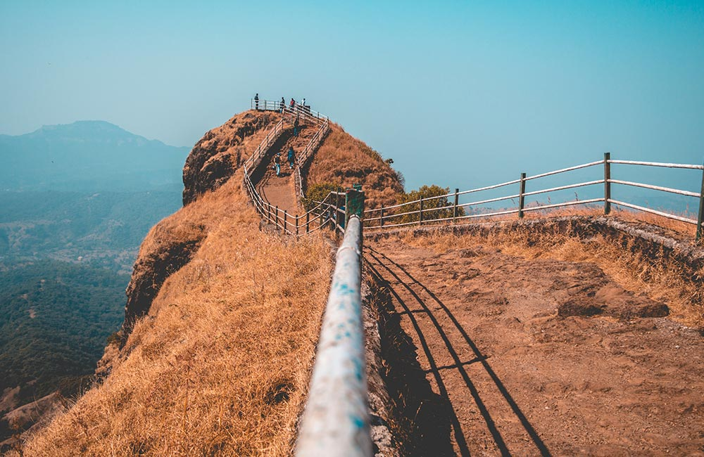
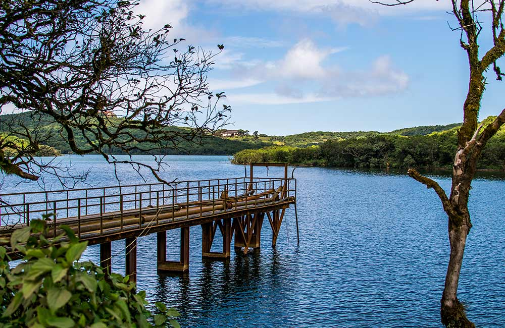

Places to Visit in Mahabaleshwar:
- Wilson Point, Mahabaleshwar

Situated at an altitude of 1439 meters above sea level, the Wilson Point is the highest point in Mahabaleshwar and offers visitors breathtaking views of the sunrise and sunset. You can also get a panoramic glance of Mahabaleshwar from this vantage point, which makes it a favorite among nature lovers and shutterbugs. Do not forget to carry your camera and capture some amazing shots.
- Location: Mahabaleshwar
- Timings: 6:00 am to 8:00 pm
- Entry Fee: Free entry
- Mumbai Point, Mahabaleshwar

Call it Mumbai Point or Bombay Point, but make sure you visit this spot which counts among the top places to visit in Mahabaleshwar. Located along the Old Bombay Road, it is one of the oldest viewpoints in the city where you can enjoy mesmerizing views of the sun going down for the day. It is a great spot to enjoy a picnic with your family and friends, with the enticing sunset view as a bonus!
- Location: Mahabaleshwar, Maharashtra
- Timings: 6:00 am to 6:00 pm
- Entry Fee: Free
- Venna Lake, Mahabaleshwar

This is a large central park with an 18th-century temple, spacious grassy fields, and pretty water features, which make it ideal for sports, picnics, and leisurely stroll. It is a vast area of picturesque gardens spread across an area of 25 acres of land. You can enter the park via its three gates each of which is topped with white minarets.
Pune holds a plethora of attractions for everyone, regardless of age. So, if you are planning a trip to the city with your kin, you will find a number of destinations to explore and marvel at. Here comes the list of the best places to visit in for a dose of live entertainment.
- Location: Venna Lake, Mahabaleshwar
- Timings: 7:00 am to 7:00 pm
- Boating Fee: ₹ 500 for 1 hour for Row Boat (Max 7 persons)
Back To Home